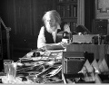

Fotoğrafçılık tarihinin en önemli artistik ve teknik yenilikçilerinden biri olan Eadweard J. Muybridge (1830–1904) İngiltere’den ABD’ye göç etmişti. Hareket halindeki insan ve atları gösteren fotoğraf dizileri ile büyük bir üne kavuştu. Geliştirdiği yeni teknikler ile çektiği resimleri, kameranın nasıl farklı kullanılabileceğini göstererek film endüstirisinin de temellerini atmıştır.
Artistik başarılarına ek olarak Muybridge, yaşadığı dönemde garip dış görünümü ile de ün kazanmıştı. Sık sık isim değiştiriyordu. 1874 yılında cinayetle suçlanmış, ancak aklanmıştı.

Asıl ismi Edward Muggeridge’di. İngiltere’deki Kingston-upon-Thames bölgesinde doğdu. Yaklaşık beş kez isim değiştirdi. En sonunda 1850’lerin başında ABD’ye göç ettiğinde Eadweard Muybridge isminde karar kıldı. 1855 yılında San Fransisco’ya gitti. Burada doğa fotoğrafçısı olarak çalıştı.
1872 yılında tren yolu baronu ve Kaliforniya eski valisi Leland Stanford (1824–1893) ile tanıştı. Bir at yarışçısı olan Stanford, Muybridge’e eski bir sorunun yanıtını vermesi karşılığında 2 bin dolar önerdi: Dört nala giden bir atın ayaklarının hepsinin aynı anda yerden kesilmesi mümkün müydü?
Bu sorunun yanıtını verebilmek için Muybridge’in atları hareket halinde gösteren yeni fotoğraf teknikleri geliştirmesi gerekti. Proje toplam altı yıl sürdü. Ancak 1874 yılındaki cinayet yargılaması nedeniyle yarıda kesildi (avukatını Stanford tutmuştu). Kaliforniya Napa Jürisi, on üç saat düşündükten sonra Muybridge’in eşinin sevgilisini öldürmesinin haklı nedenleri olduğu gerekçesiyle onu beraat ettirmeye karar verdi.
Ünlü at fotoğrafları dizisi, 15 Haziran 1878 sabahında on iki kamera ile Palo Alto’daki bir yolda çekildi. Yirmi dakika sonra bir grup gözlemcinin önünde Muybridge resimleri tab etti. Çok kısa bir süre için de olsa atların dört ayağının da aynı anda yerden kesilebildiğini kanıtlamıştı.
Muybridge insanların, atların, bizonların ve diğer hayvanların hareket ederken resimlerini çekmeye devam etti. İlkel bir hareketli fotoğraf makinası olan zoopraxiscope’i icat etti. Bu alet film projektörünün atası olarak kabul edilmektedir. Ömrünün son on yılını İngiltere’de geçirdi. 74 yaşında öldü.
Ek Bilgiler
1- Muybridge 100 binden fazla hayvan ve insan resmi çekti.
2- Bestekar Philip Glass (1937–), 1982 tarihli “The Photographer” (Fotoğrafçı) operasını Muybridge’in cinayet davasından esinlenerek yazmıştır.
3- Muybridge için en zor olanı, yeterince hızlı bir objektif kapağı geliştirebilmekti. Ancak saniyenin 500/1’i kadar hızla hareket eden bir kapak koşan bir atın resmini çekebilirdi. Aynı şekilde, çok kısa bir süre ışığa maruz kalacak filme de ihtiyacı vardı. O dönemde kullanılan filmler on beş saniye ile birkaç dakika arasında ışığa maruz kalıyordu. John D. Isaacs tarafından keşfedilen mekanik bir objektif kapağı, ilk sorunu çözdü. 1870’lerin yeni film teknolojileri de ikinci sorunun çözülmesine katkı sundular.